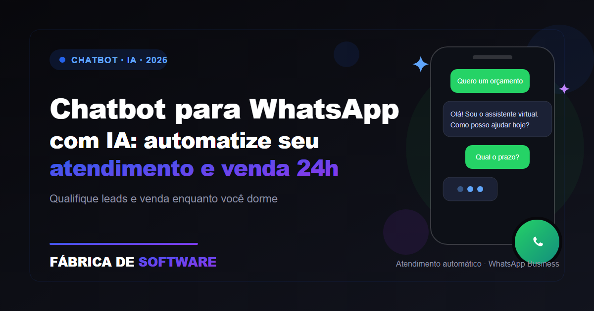

O que é um chatbot para WhatsApp empresarial?
Um chatbot para WhatsApp empresarial é uma solução que utiliza automações e inteligência artificial para conversar com clientes, responder dúvidas, apresentar serviços, coletar informações e encaminhar cada atendimento para o setor correto.
Diferentemente de uma simples mensagem automática, um chatbot inteligente consegue interpretar perguntas, identificar a necessidade do cliente e conduzir a conversa de maneira mais natural.
Na prática, ele pode ajudar uma empresa a:
- Responder clientes imediatamente
- Apresentar produtos e serviços
- Enviar informações sobre preços e condições
- Qualificar potenciais clientes
- Agendar reuniões ou atendimentos
- Solicitar dados para elaboração de propostas
- Encaminhar conversas para um atendente humano
- Organizar contatos e oportunidades comerciais
O objetivo não é substituir completamente a equipe, mas garantir que nenhum cliente fique sem resposta e que os atendimentos sejam organizados desde o primeiro contato.
Como o chatbot ajuda a vender 24 horas por dia?
Muitos clientes pesquisam produtos e serviços fora do horário comercial. Um consumidor pode encontrar uma empresa à noite, durante o fim de semana ou em um feriado e querer tirar uma dúvida imediatamente.
Quando não encontra resposta, é comum procurar outra empresa.
O chatbot para WhatsApp permite que a empresa continue disponível mesmo quando a equipe está offline. Ele pode responder perguntas frequentes, explicar os próximos passos e registrar o interesse do cliente para que um vendedor continue o atendimento depois.
Isso não significa que a inteligência artificial venda sozinha em todos os casos. O que ela faz é reduzir o tempo de espera, evitar a perda de oportunidades e facilitar o caminho até o orçamento ou a compra.
As principais novidades dos agentes de IA no WhatsApp
O atendimento automatizado está evoluindo de respostas pré-programadas para agentes capazes de compreender o contexto da conversa e executar tarefas.
Em junho de 2026, a Meta anunciou o Meta Business Agent, uma solução voltada a ajudar empresas a responder perguntas, recomendar produtos, qualificar leads, agendar compromissos e permitir a intervenção de um funcionário quando necessário. A disponibilidade e os recursos podem variar conforme o país, a conta e a elegibilidade da empresa. Confira o anúncio da Meta sobre o Business Agent.
Essa evolução mostra que os chatbots estão deixando de ser apenas ferramentas de respostas automáticas. Eles passam a atuar como assistentes comerciais digitais, capazes de apoiar várias etapas da jornada do cliente.
1. Atendimento mais personalizado
Com uma base de conhecimento bem configurada, o chatbot pode responder de acordo com os serviços, horários, regiões atendidas e regras específicas da empresa.
2. Qualificação automática de leads
Antes de encaminhar o contato para o vendedor, a inteligência artificial pode perguntar:
- Qual serviço o cliente procura?
- Em qual cidade está localizado?
- Qual é o prazo desejado?
- Qual é o tamanho do projeto?
- Já possui orçamento de outra empresa?
- Prefere receber contato por texto ou ligação?
Com essas informações, o vendedor recebe uma oportunidade mais organizada e pode fazer uma abordagem mais relevante.
3. Integração com campanhas e anúncios
A Meta também vem aproximando campanhas de Facebook, Instagram e WhatsApp, permitindo que as empresas criem estratégias integradas para atrair pessoas e iniciar conversas comerciais. Veja as atualizações anunciadas pela Meta para empresas no WhatsApp.
Uma campanha pode levar o usuário diretamente para uma conversa no WhatsApp, onde o chatbot apresenta opções, responde dúvidas e direciona o cliente para uma proposta.
4. Transferência para atendentes humanos
Um bom chatbot precisa saber quando parar. Questões complexas, reclamações, negociações e situações sensíveis devem ser encaminhadas para uma pessoa da equipe.
Essa transferência evita respostas inadequadas e proporciona uma experiência mais segura para o consumidor.
O que um chatbot para WhatsApp pode automatizar?
As possibilidades dependem do tipo de negócio, mas os fluxos mais utilizados incluem:
Recepção inicial
O chatbot pode iniciar a conversa, apresentar a empresa e perguntar como pode ajudar.
Menu de serviços
O cliente pode escolher entre opções como:
- Solicitar orçamento
- Conhecer os serviços
- Consultar área de atendimento
- Agendar uma conversa
- Falar com o setor comercial
- Solicitar suporte
Respostas para dúvidas frequentes
É possível automatizar respostas sobre:
- Horário de funcionamento
- Formas de pagamento
- Prazo de atendimento
- Regiões atendidas
- Serviços disponíveis
- Documentos necessários
- Política de troca ou cancelamento
Captação de informações
O chatbot pode solicitar nome, e-mail, telefone, cidade e descrição da necessidade do cliente.
Agendamento
Empresas de saúde, estética, educação, consultoria, serviços residenciais e profissionais liberais podem utilizar o WhatsApp para organizar solicitações de agendamento.
Pós-venda
Depois da contratação, o chatbot pode enviar orientações, atualizações de status, lembretes e pesquisas de satisfação.
Chatbot com IA ou automação tradicional?
A automação tradicional trabalha com menus e palavras-chave previamente definidos. Ela é previsível e funciona bem para fluxos simples.
Já o chatbot com inteligência artificial consegue interpretar perguntas mais abertas e responder com base em informações fornecidas pela empresa.
A melhor estratégia geralmente combina os dois modelos:
- Menus para ações objetivas
- Inteligência artificial para dúvidas e conversas
- Regras de segurança para evitar respostas incorretas
- Atendimento humano para situações que exigem análise
A empresa não deve deixar a IA responder livremente sobre assuntos que não estejam em sua base de conhecimento. Quanto mais clara e atualizada for a informação fornecida ao chatbot, melhor será a qualidade do atendimento.
Como criar um chatbot eficiente para sua empresa?
1. Defina o objetivo principal
O chatbot será usado para vender, agendar, prestar suporte ou captar contatos? Ter um objetivo claro evita uma experiência confusa.
2. Mapeie as dúvidas dos clientes
Observe as perguntas mais frequentes recebidas pelo WhatsApp, Instagram, telefone e site.
3. Crie uma base de conhecimento
Reúna informações atualizadas sobre serviços, preços, horários, políticas, regiões e formas de contato.
4. Desenvolva os fluxos de conversa
O cliente deve conseguir avançar com poucos passos e sempre encontrar uma opção para falar com uma pessoa.
5. Integre o WhatsApp ao processo comercial
O chatbot pode encaminhar os dados para um CRM, painel de vendas, e-mail ou sistema de atendimento.
6. Defina limites para a inteligência artificial
A IA deve saber quando informar que não possui uma resposta e encaminhar o contato para a equipe.
7. Acompanhe os resultados
Monitore quantas conversas foram iniciadas, quantos contatos foram qualificados, quantos pedidos de orçamento foram gerados e quantos atendimentos precisaram de intervenção humana.
Segurança, privacidade e LGPD
Um chatbot trabalha com informações fornecidas pelos usuários. Por isso, a empresa deve explicar de forma clara como os dados serão utilizados, evitar a coleta de informações desnecessárias e proteger o acesso ao sistema.
A ANPD disponibiliza orientações de segurança da informação para empresas de pequeno porte, incluindo medidas administrativas e técnicas para proteção de dados pessoais. Consulte o guia da ANPD.
Também é importante:
- Informar quando o cliente está conversando com uma inteligência artificial
- Permitir o contato com um atendente
- Não solicitar dados além do necessário
- Controlar quem pode acessar as conversas
- Registrar pedidos de remoção ou descadastramento
- Manter a política de privacidade atualizada
A segurança também ganhou importância nas plataformas digitais. A Meta anunciou novos recursos de proteção contra golpes e comportamentos suspeitos em seus aplicativos, reforçando a necessidade de as empresas utilizarem canais oficiais e uma comunicação transparente. Veja as atualizações de segurança anunciadas pela Meta.
Principais métricas para acompanhar
Para saber se o chatbot está contribuindo para o crescimento da empresa, acompanhe:
- Tempo médio de primeira resposta
- Número de conversas iniciadas
- Taxa de leads qualificados
- Quantidade de pedidos de orçamento
- Número de agendamentos
- Taxa de transferência para atendentes
- Conversão de conversa em venda
- Quantidade de contatos abandonados
- Satisfação dos clientes
O chatbot não deve ser avaliado apenas pelo número de mensagens respondidas. O mais importante é verificar se ele está ajudando a gerar oportunidades melhores e uma experiência mais rápida para o cliente.
Chatbot substitui a equipe de atendimento?
Não necessariamente.
A inteligência artificial pode assumir tarefas repetitivas e organizar o início da conversa, mas a equipe continua importante para negociações, reclamações, decisões complexas e relacionamento com clientes estratégicos.
O modelo mais eficiente é o atendimento híbrido:
Chatbot recebe → IA entende → Sistema coleta dados → Lead qualificado → Atendente assume → CRM registra tudo
Dessa forma, a equipe economiza tempo e consegue se concentrar nas conversas que realmente precisam de atenção humana.
Conclusão
Um chatbot para WhatsApp empresarial com inteligência artificial pode transformar o atendimento de uma empresa, reduzir o tempo de resposta e criar novas oportunidades comerciais durante todos os dias da semana.
Quando é planejado corretamente, ele não funciona apenas como um robô de mensagens. Ele se torna uma extensão da equipe comercial, capaz de receber clientes, responder dúvidas, organizar informações, qualificar oportunidades e encaminhar cada pessoa para o próximo passo.
Para conhecer melhor essa solução, acesse nosso conteúdo sobre chatbot para WhatsApp empresarial com IA.
A Fábrica de Software também pode ajudar sua empresa com criação de sites, automação de atendimento, inteligência artificial, integração com WhatsApp, SEO local, tráfego pago e sistemas personalizados. Conheça nossos serviços.
Fábrica de Software — tecnologia para transformar atendimento em oportunidades.
Perguntas frequentes
Quanto custa um chatbot para WhatsApp?
O investimento depende da complexidade do projeto, número de integrações, volume de atendimentos e recursos de inteligência artificial necessários.
O chatbot funciona fora do horário comercial?
Sim. Ele pode continuar recebendo mensagens, respondendo dúvidas e registrando oportunidades 24 horas por dia, conforme sua configuração.
O chatbot pode enviar orçamentos?
Pode coletar as informações necessárias para uma proposta e, em alguns casos, encaminhar respostas automáticas. Orçamentos personalizados devem ser revisados pela equipe responsável.
O cliente consegue falar com uma pessoa?
Sim. A transferência para um atendente humano deve fazer parte do projeto desde o início.
Quais empresas podem utilizar chatbot?
Empresas de serviços, lojas, clínicas, escritórios, imobiliárias, escolas, restaurantes, profissionais liberais e negócios que recebem muitos contatos pelo WhatsApp podem se beneficiar da automação.
Automatize seu atendimento no WhatsApp com IA
Solicite uma demonstração gratuita e descubra como um chatbot com inteligência artificial pode transformar seu atendimento em vendas 24 horas por dia.
Quero um chatbot para meu WhatsAppTags: chatbot para WhatsApp empresarial, chatbot WhatsApp com IA, automação WhatsApp, atendimento automatizado, atendimento 24 horas, vendas pelo WhatsApp, inteligência artificial para empresas, agente de IA, WhatsApp Business Platform, automação comercial, CRM e WhatsApp, qualificação de leads, marketing conversacional, vendas automatizadas, atendimento com inteligência artificial, chatbot para empresas, IA para atendimento ao cliente, automação de vendas